컴퓨터응용가공산업기사 (2006-09-10 기출문제)
1과목: 기계가공법 및 안전관리
1. 연삭숫돌의 결합제와 기호를 짝지은 것이 잘못된 것은?
- 고무-R
- 셀락-E
- 비닐-PVA
- 레지노이드-L
(정답률: 57%)

2. 롤러 중심거리가 200mm인 사인바로 각도를 측정하고자 할 때 게이지 블록의 높이가 각각 10mm와 110mm이었다면 각도 θ는 얼마인가?
- 15
- 30
- 45
- 60
(정답률: 47%)
3. W, Ti, Ta등의 경질합금 탄화물 분말에 Co 또는 Ni을 결합제로 소결하여 제조한 절삭 공구의 재료는?
- 탄소 공구강
- 스텔라이트
- 초경 합금
- 시효경화 합금
(정답률: 61%)
4. 센터리스 연삭기의 장, 단점에 대한 설명으로 옳은 것은?
- 장점:연삭 여유가 작아도 된다.
- 장점:대형 중량물을 연삭한다.
- 단점:긴 축 재료의 연삭이 불가능하다.
- 단점:연속작업을 할 수 없고, 대량 생산에 부적합하다.
(정답률: 59%)
5. 공기 마이크로미터의 장점에 대한 설명으로 잘못된 것은?
- 확대율이 매우 크고, 조정도 쉽다.
- 측정력이 작아 무접촉의 측정이 가능하다.
- 반지름이 작은 다른 종류의 측정기로는 불가능한 것을 측정할 수 있다.
- 비교측정기가 아니기 때문에 마스터는 필요 없다.
(정답률: 75%)
6. 밀링머신에서 일반적으로 할 수 없는 가공은?
- 충형 가공
- 기어 가공
- 널링 가공
- 나선홈 가공
(정답률: 67%)
7. 구성 인선(bulit-up edge)의 방지대책으로 틀린 것은?
- 절삭 깊이를 작게 할 것
- 공구의 윗면 경사각을 크게 할 것
- 공구 인선을 예리하게 할 것
- 절삭속도를 작게 할 것
(정답률: 73%)
8. 인벌류트 치형을 정확히 가공할 수 있는 방법으로 절삭 공구와 공작물이 서로 기어가 회전운동을 할 때에 접촉하는 것과 같은 상대운동으로 기어를 절삭하는 방법은?
- 형판에 의한 기어 절삭법
- 지그에 의한 기어 절삭법
- 창성법에 의한 기어 절삭법
- 총형공구의 의한 기어 절삭법
(정답률: 79%)
9. 드릴작업에서 절삭속도 18m/min, 회전수 115rpm일 때, 드릴의 지름은 얼마인가?
- 35.91mm
- 49.82mm
- 54.73mm
- 68.64mm
(정답률: 82%)
10. 주철을 저속으로 절삭할 때 나타내는 일반적인 칩의 형태는?
- 전단형
- 경작형
- 균열형
- 유동형
(정답률: 30%)
11. 연삭하려는 부품의 형상으로 연삭숫돌을 형성하거나, 성형연삭으로 인하여 숫돌 형상이 변화된 것을 부품의 형상으로 바르게 고치는 가공은?
- 프레싱
- 트루잉
- 글레이징
- 로우딩
(정답률: 63%)
12. 선반의 부품 중 원판 안에 전자석을 설치하고 이것에 전류를 흘려 보내면 척은 자화되어 일감을 고정시키는 것은?
- 연동척
- 콜릿척
- 압축공기척
- 마그네틱척
(정답률: 82%)
13. 복식공구대를 선회시켜 테이퍼 가공시 테이퍼의 큰 지름을 D(mm), 작은 지름을 d(mm), 테이퍼의 길이가 L(mm)일 때, 공구대의 선회각 α/2에 대한 tanα/2의 값은?
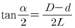
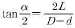
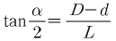
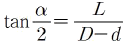
(정답률: 52%)
14. 회전하는 상자속의 가공물, 숫돌입자, 가공액, 콤파운드 등을 함께 넣고 회전시켜 서로 부딪치며 가공되어 매끈한 가공면을 얻는 것은?
- 배럴가공
- 래핑
- 슈퍼피니싱
- 연삭
(정답률: 83%)
15. 절삭속도 25m/min, 밀링커터의 날 수 10, 지름 150mm, 1날당 이송을 0.2mm로 할 때 테이블의 분당 이송속도는?
- 106.1mm/min
- 210.5mm/min
- 250.7mm/min
- 298.4mm/min
(정답률: 67%)
16. 정밀측정에서 아베의 원리를 가장 올바르게 설명한 것은?
- 눈금선의 간격은 일치 되어야 한다.
- 단도기의 지지는 양끝 단면이 평행 하도록 한다.
- 표준자와 피측정물은 동일 축선상에 있어야 한다.
- 내측 측정시는 최대값을 택한다.
(정답률: 66%)
17. 전기도금과 반대 현상을 이용한 가공으로 알루미늄은 거울과 같이 광택있는 가공면을 비교적 쉽게 가공할 수 있는 것은?
- 방전가공
- 전해연마
- 액체호닝
- 레이저가공
(정답률: 62%)
18. 수사공에서 탭(tap)과 다이스(dies)를 이용한 작업은?
- 나사깍기 작업
- 리머 작업
- 스크레이퍼 작업
- 금긋기 작업
(정답률: 67%)
19. 다음 중 구멍의 내면, 곡면, 내접기어, 스플라인 구멍 등을 가공할 수 있는 공작 기계로 가장 적합한 것은?
- 슬로터
- 드릴머신
- 플레이너
- 선반
(정답률: 63%)
20. 일반적으로 기계 절삭가공시 안전사항으로 틀린 것은?
- 기계에 주유할 때에는 운전상태에서 한다.
- 고장기계는 반드시 표시한다.
- 운전 중 기계에서 이탈하지 않는다.
- 정전시 스위치를 끈다.
(정답률: 88%)
2과목: 기계설계 및 기계재료
21. 금속을 가열한 다음 급속히 냉각시켜 재질을 경화시키는 열처리 방법은?
- 뜨임
- 담금질
- 불림
- 풀림
(정답률: 65%)
22. 탄소량이 0.7%이하인 강은?
- 아공석강
- 공석강
- 과공석강
- 주철
(정답률: 58%)
23. 산소와 아세틸렌 혼합비를 1:1로 하여 가열 후 물로 급냉 시키는, 쇼터라이징(shorterzing)이라고도 불리우는 표면 경화법의 종류인 것은?
- 고주파 경화법
- 침탄법
- 화염 경화법
- 방전 경화법
(정답률: 50%)
24. 알루미늄의 용도로서 적당하지 않는 것은?
- 드로잉 재료
- 다이캐스팅 재료
- 자동차 구조용 재료
- 절삭날 재료
(정답률: 69%)
25. 알루미늄-규소계 합금으로 알팩스라고도 하며, 주조성은 좋으나 절삭성이 좋지 않은 것은?
- 라우탈
- 콘스탄탄
- 실루민
- 하이드로날륨
(정답률: 35%)
26. 금속의 소성가공에서 열간가공과 냉간가공의 구분은 무엇으로 하는가?
- 변태온도
- 용융온도
- 재결정온도
- 응고온도
(정답률: 84%)
27. 다음 주철 중 인장강도가 가장 낮은 것은?
- 백심가단주철
- 구상흑연주철
- 보통주철
- 흑심가단주철
(정답률: 71%)
28. 다음 중 쾌삭강에 첨가되는 주요원소는?
- Mg
- Pb
- Cr
- Si
(정답률: 34%)
29. 다음의 기계재료 중 황동(Brass)합금에 속하지 않는 것은?
- 인바
- 문쯔메탈
- 톰백
- 델타메탈
(정답률: 62%)
30. 다음 중 강의 5대 원소에 속하지 않는 것은?
- C
- Mn
- Cr
- Si
(정답률: 44%)
31. 다음 운동용 나사 중 수치제어용 공작기계의 이송나사로 가장 적합한 것은?
- 볼나사
- 사각나사
- 둥근나사
- 사다리꼴나사
(정답률: 75%)
32. 묻힘 키(Sunk key)에서 키의 폭 10mm, 키의 유효길이 54mm, 키의 높이 8mm, 축의지름 34mm일 때 전달 토크(kgf-mm)는 약 얼마인가? (단, 키(key)의 허용전단응력 3.5kgf-mm2이다.)
- 32130
- 64260
- 257040
- 514080
(정답률: 34%)
33. 역류를 방지하여 유체를 한쪽 방향으로만 흘러가게 하는 밸브를 무슨 밸브라 하는가?
- 콕밸브
- 체크밸브
- 게이트밸브
- 플랩밸브
(정답률: 80%)
34. 나사산의 각도가 60°인 것은?
- 유니파이 보통나사
- 사다리꼴나사
- 톱니나사
- 둥근나사
(정답률: 54%)
35. 외경 10cm, 내경 5cm의 속빈 원통이 축 방향으로 10톤의 안장 하중을 받고 있다. 이 때 재료에 발생하는 응력은 약 얼마인가?
- 1.69kgf/mm2
- 874.5kgf/mm2
- 8.74kgf/mm2
- 169.8kgf/mm2
(정답률: 16%)
36. 앤드 저널로서 직경 60mm, 폭경비가 l/d=2.5일 때 베어링 하중은 몇 kN인가? (단, 허용 베어링 압력은 3.92N/mm2이다.)
- 27.5
- 30.3
- 35.3
- 41.2
(정답률: 37%)
37. 레디얼 볼 베어링 6208에서 08의 숫자는 다음 중 무엇을 표시하는가?
- 볼의 크기
- 내륜의 내경
- 외륜의 외경
- 하중의 크기
(정답률: 53%)
38. 회전수가 N(rpm)인 볼베어링의 수명시간(Lh)는?
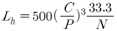
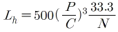
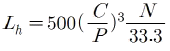
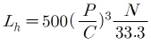
(정답률: 42%)
39. 다음 중 회전력의 크기가 가장 큰 키(Key)는?
- 접선 키
- 새들 키
- 평 키
- 둥근 키
(정답률: 38%)
40. 베어링 메탈의 구비조건으로 틀린 것은?
- 마찰저항이 클 것
- 내식성이 높을 것
- 피로한도가 높을 것
- 압축강도 및 강성이 높을 것
(정답률: 61%)
3과목: 컴퓨터응용가공
41. 3차원 솔리드 모델링을 구성하는 요소 중 프리미티브(primitive)라고 볼 수 없는 것은?
- 에지(edge)
- 원기둥(cylinder)
- 원뿔(cine)
- 구(sphere)
(정답률: 85%)
42. 다음 중 곡선의 2차 미분 값을 필요로 하는 것은?
- 곡선의 기울기
- 곡선의 곡률
- 곡선 위의 특정점에서 접선
- 곡선의 길이
(정답률: 49%)
43. 다음 디스플레이 중 주사선 방식에 의한 디스플레이는?
- Plasma gas display
- Raster scan display
- Liquid crystal display
- Lighting emitting diodes display
(정답률: 38%)
44. 2차원으로 구성되는 가장 일반적인 원추곡선의 식은 다음과 같다. 계수가 b2-ac＜0인 경우의 표현은?
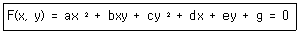
- 원
- 타원
- 포물선
- 쌍곡선
(정답률: 25%)
45. 그림에서 r0가 평면상의 한 점 P를 가리기고 n1, n2가 평면상의 임의의 두 벡터라면 평면을 정의하는 매개변수식 r(u, v)는?
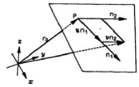
- r(u, v)=r0+n1+n2
- r(u, v)=r0+un1+vn2
- r(u, v)=r0+un1+n2
- r(u, v)=r0+n1+vn2
(정답률: 30%)
46. 일반적으로 평면 가공에 비하여 곡면 가공이 가지고 있는 특징으로 틀린 것은?
- 공구의 마모와 손상이 매우 작아진다.
- 일반적으로 가공 시간이 길어진다.
- 볼 엔드밀로 가공할 경우 Cusp이 생긴다.
- 공구의 길이는 길어지고 직경은 작아진다.
(정답률: 39%)
47. 3차원 형상의 솔리드 모델링에서 CSG방식과 B-Rep방식을 비교한 것 중 틀린 것은?
- B-Rep방식은 CSG방식에 비해 데이터 구조가 복잡하다.
- B-Rep방식은 CSG방식에 비해 3면도, 투시도 작성이 용이하다.
- B-Rep방식은 CSG방식에 비해 메모리 양이 작다.
- B-Rep방식은 CSG방식에 비해 표면적 계산이 용이하다.
(정답률: 56%)
48. 서로 다른 CAD/CAM 시스템 사이에서 데이터를 상호교환하기 위한 데이터 포맷 방식이 아닌 것은?
- IGES
- STEP
- DXF
- DWG
(정답률: 55%)
49. 컬러 래스터 스캔 화면 생성방식에서 3bit plane의 사용가능한 색깔의 수는 모두 몇 개인가?
- 8
- 32
- 256
- 1024
(정답률: 49%)
50. 플라즈마 디스플레이(PDP)의 일반적인 특징이 아닌 것은?
- 박형이면서 대화면 표시가 어렵다.
- 화면이 완전 평면이고 일그러짐이 없다.
- 자기발광으로 밝고 시야각이 우수하다.
- 기체방전을 이용하므로 응답속도가 빠르다.
(정답률: 20%)
51. serial data를 전송할 때 전송속도를 나타내는 단위는?
- CPS(character per second)
- SPS(dot per second)
- SIP(dot per inch)
- BPS(bits per second)
(정답률: 59%)
52. 서피스 모델링에 대한 설명으로써 옳지 않은 것은?
- 원이나 원호를 곡선의 개념으로 표현할 수 있다.
- 곡선을 구성하는데 사용되는 점의 숫자는 원천적으로 제한이 있다.
- Surface는 하나 이상의 patch로 구성할 수 있다.
- spline은 자유곡선을 의미한다.
(정답률: 58%)
53. 다음 식에서 a=d이면 도형은 어떻게 이동되는가? (단, a, d가 1보다 크다.)
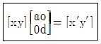
- 원점을 중심으로 확대 변환한다.
- x축을 중심으로 회전한다.
- y축을 중심으로 회전한다.
- 이동하지 않는다.
(정답률: 48%)
54. 다음 곡선에 대한 설명으로 틀린 것은?
- B-spline 곡선식은 일반적인 NURB 곡선식을 포함하는 더 일반적인 형태의 곡선이다.
- B-spline 곡선에서는 곡선의 모양을 변화시키기 위해서 각각의 control point의 좌표를 조절하지 만, NURB 곡선에서는 동차 좌표 값까지 포함하여 4개의 자유도가 있다.
- B-spline 곡선을 원, 타원, 포물선 등 원추곡선을 근사하게 밖에 나타내지 못한다.
- NURB 곡선은 원, 타원, 포물선 등 원추곡선을 표현할 수 있어, 프로그램 개발 시 모든 곡선을 NURB 곡선으로 나타냄으로써 작업량을 줄여준다.
(정답률: 37%)
55. 그림과 같은 방법으로 평면상의 한 점 P의 위치를 표현하는 좌표계는?
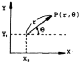
- 직교 좌표계
- 원통 좌표계
- 극 좌표계
- 구면 좌표계
(정답률: 53%)
56. 다음 그림에서 4개의 경계곡선을 이용하여 하나의 패치(coon's patch)를 구성할 때 기본적으로 주의하여야 할 사항으로 거리가 먼 것은?
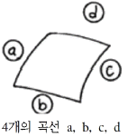
- 4개의 경계곡선의 길이가 일치하는가를 점검한다.
- 4개의 경계곡선의 각각의 끝이 일치하는가를 점검한다.
- 4개의 경계곡선을 구성하는 점의 숫자가 일치하는가를 점검한다.
- 4개의 경계곡선을 구성하는 요소의 종류가 같은가를 점검한다.
(정답률: 31%)
57. 모델링에 있어 y=f(x)와 같은 양함수 형태로 곡선을 표현할 때, 높은 차수의 다항식으로 표현하여 사용하지 않은 이유로 적절한 것은?
- 양함수식은 컴퓨터 그래픽스를 통해 화면에 표현이 어렵기 때문이다.
- 함수의 차수가 높아질수록 도형이 단순해지기 때문이다.
- 원호만으로도 모든 곡선을 표현할 수 있기 때문이다.
- 차수가 높을수록 곡선에 심한 변곡이 발생할 수 있기 때문이다.
(정답률: 53%)
58. CAD 시스템에 의해 자료를 입력할 때 점(point)의 위치를 기준으로 입력하게 된다. 이 점들의 위치를 입력하기 위해서 원점에서부터 xy평면에서 점의 위치까지의 거리(r), 이 거리가 x축과 이루는 각도(θ), 높이(z) 값에 의해서 표시되는 좌표계 시스템을 무엇이라고 하는가?
- 직교 좌표계
- 극 좌표계
- 구면 좌표계
- 원통 좌표계
(정답률: 36%)
59. IGES 파일의 구성 section이 아닌 것은?
- directory entry section
- global section
- local section
- start section
(정답률: 45%)
60. 다음 모델 중 공학적 해석을 위한 물리적인 성질을 제공할 수 있는 가장 적합한 모델은?
- 2차원 모델
- 서피스(surface) 모델
- 솔리드(solid) 모델
- 와이어 프레임(wire frame) 모델
(정답률: 64%)
4과목: 기계제도 및 CNC공작법
61. 다음 그림에서 A와 같은 투상도를 무엇이라 하는가?
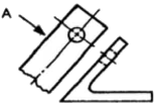
- 보조 투상도
- 가상도
- 국부 투상도
- 회전도법
(정답률: 48%)
62. 다음은 가상선에 대한 용도이다. 잘못된 것은?
- 인접부분을 참고로 표시하는 선
- 공구, 지그 등의 위치를 참고로 표시하는 선
- 가동부분의 이동한계의 위치를 표시하는 선
- 가공면이 평면임을 나타내는 선
(정답률: 60%)
63. 보기 입체도를 제 3각법으로 정투상한 다음 도면에 관한 설명으로 가장 적합한 것은?
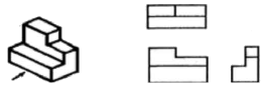
- 정면도만 틀림
- 평면도만 틀림
- 우측면도만 틀림
- 모두 올바름
(정답률: 77%)
64. 기와 같이 기워 맞춤부분 치수가
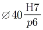
로 기입 되어 있을 때, 끼워 맞춤의 종류는?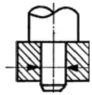
- 헐거운 끼워 맞춤
- 중간 끼워 맞춤
- 억지 끼워 맞춤
- 단면 끼워 맞춤
(정답률: 56%)
65. 보기와 같은 공차기호에서 최대실체 공차방식을 표시하는 기호는?
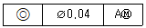
- ⦾
- A
- Ⓜ
- AM
(정답률: 59%)
66. 다음 스케치도에 관한 설명 중 틀린 것은?
- 측정한 치수를 기입한다.
- 프리핸드로 그린다.
- 재질 및 가공법은 기입할 필요가 없다.
- 조립에 필요한 사항을 기입한다.
(정답률: 50%)
67. 얇은 물체의 단면을 표시하는 법 설명 중 틀린 것은?
- 굵은 실선으로 표시한다.
- 패킹, 박판, 얇은 물체 등에 널리 쓰인다.
- 단면이 입접하고 있을 때 단면을 표시하는 선과 선 사이에 약간 틈을 준다.
- 얇은 물체는 단면을 표시할 수 없다.
(정답률: 64%)
68. 보기와 같이 투상된 정면도와 우측면도에 가장 적합한 평면도는?
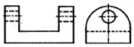
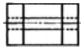
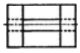
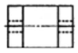
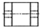
(정답률: 49%)
69. 다음 기하공차 기호 중 위치공차를 나타내는 기호가 아닌 것은?
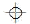
- ⦾
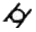
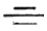
(정답률: 36%)
70. 다음 중 1점쇄선으로 표시하지 않는 선은?
- 숨은선
- 기어의 피치선
- 절단선
- 중심선
(정답률: 39%)
71. 공구의 노즈 반경이 0.3mm, 이송속도가 0.1mm/rev인 경우의 이론적인 표면거칠기 H는 몇 μm인가?
- 4.17
- 0.416
- 8.34
- 0.834
(정답률: 22%)
72. 다음 그림과 같은 NC 공작기계의 제어 방식은?
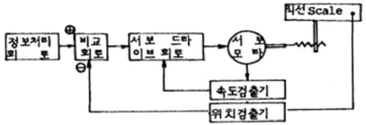
- Open-loop 방식
- Semi-closed loop 방식
- Closed-loop 방식
- Semi-open loop 방식
(정답률: 22%)
73. 그림과 같이 스위치의 위치를 ON으로 하였다면 어떤 지령을 받을 때 정지하는가?
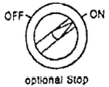
- M01
- M02
- M03
- M04
(정답률: 37%)
74. 다음 보기는 CNC선반의 복합 반복 단면 황삭 사이클이다. 설명 중 틀린 것은?
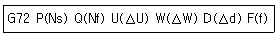
- P는 복합 반복 사이클이 시작되는 전개번호이다.
- Q는 복합 반복 사이클이 끝나는 전개번호이다.
- W는 Z축 방향의 정삭 여유량이다.
- D는 1회 절삭 깊이로 소수점 지령을 한다.
(정답률: 49%)
75. 머시닝센터에서 그림과 같이 A에서 B로 공구를 이동시키려 한다. 증분방식(Incremental Programming)으로 올바르게 프로그램된 것은?
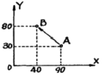
- G50 G01 X40.0 Y80.0 ;
- G90 G01 X40.0 Y80.0 ;
- G91 G01 X-50.0 Y50.0 ;
- F50 F01 X-50.0 Y50.0 ;
(정답률: 59%)
76. CNC 선반에서 공구 기능을 4자리 숫자로서 표시할 경우 T0204에서 04는 무엇을 뜻하는가?
- 공구 선택 번호
- 공구 삭제 번호
- 공구 보정 번호
- 공구 교환 번호
(정답률: 73%)
77. 일반적으로 머시닝센터에서 사용하지 않는 공구는?
- 절단 바이트
- 볼엔드밀
- 센터드릴
- 탭
(정답률: 65%)
78. 머시닝센터에서 공작물 가공시 주의해야 할 사항으로 옳은 것은?
- 절삭유로 기름을 사용할 때에는 필히 장갑을 끼고 가공한다.
- 칩의 제거는 기계가 정지한 후에 한다.
- 주축의 회전은 1,300rpm 이상을 지령해야 한다.
- 측정은 기계 가동 중 직접 행한다.
(정답률: 58%)
79. 다음 프로그램에서 보조(sub)프로그램 1375번은 몇 번 반복 하는가?
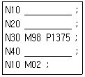
- 1회
- 2회
- 3회
- 4회
(정답률: 54%)
80. CNC 시스템의 구성요소 중 실제 테이블의 이송량을 감지하는 장치로 일반적으로 서보보터 뒤쪽에 부착되어 있는 장치는?
- 변환기(transducer)
- 리졸버(resolver)
- 엔코더(encoder)
- 볼스크류(ball screw)
(정답률: 55%)